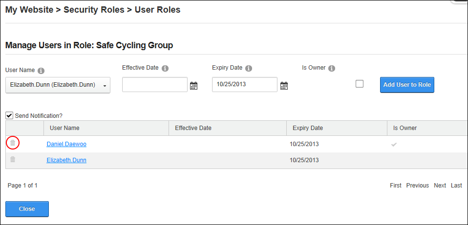

Deleting a User from a Security Role
How to delete a user from a security role using the Security Roles module. Users will immediately be denied access to any modules or pages which are restricted to members of the selected roles.
- Navigate to Admin >
 Security Roles - OR - Go to a Security Roles module.
Security Roles - OR - Go to a Security Roles module.
- If the required role is not displayed, at Filter By Role Group select the [Role Group Name] associated with the role - OR - Select < All Roles >.
- Click the Manage Users
 button beside the required role. This opens the Manage Users In Role page for the selected role.
button beside the required role. This opens the Manage Users In Role page for the selected role.
- Locate the user and click the Delete
 button located to the left of their name. This displays the message "Are you sure you want to remove [username] from the [role name] role?"
button located to the left of their name. This displays the message "Are you sure you want to remove [username] from the [role name] role?"
- Click the Yes button to confirm.

Tip: On the Manage Users In Role page, each user who is a member of the role is listed by Username. Clicking on a linked Username will display their users profile and allowing you to check their account details to ensure you have the correct user.